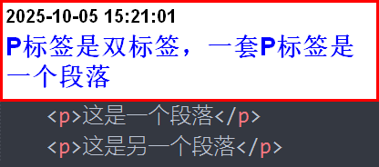
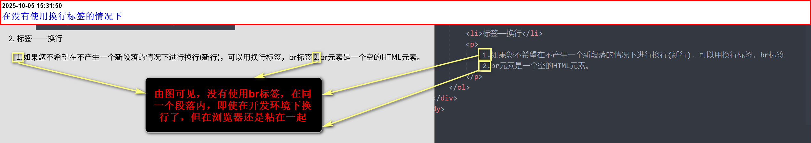
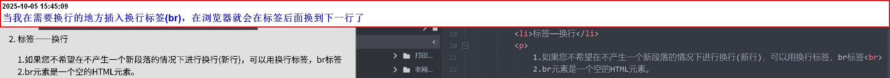
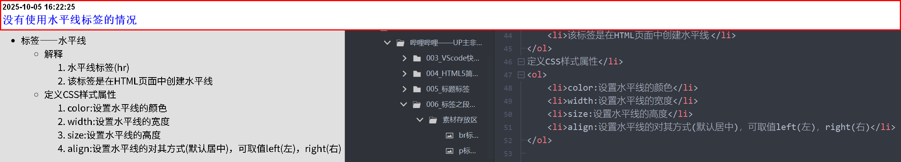

标签-段落
- 段落是通过
标签定义的
这是一个段落
这是另一个段落
标签——换行
1. 如果您不希望在不产生一个新段落的情况下进行换行（新行），可以用换行标签，br标签
2. br元素是一个空的HTML元素。
3. 注意：换行标签可以叠加使用。
未使用换行标签(br)，实际效果演示
使用换行标签(br)，实际效果演示
标签——水平线
- 解释
- 水平线标签(hr)
- 该标签是在HTML页面中创建水平线
- 定义CSS样式属性
- color: 设置水平线的颜色
- width: 设置水平线的宽度
- height: 设置水平线的高度
- align: 设置水平线的对齐方式（默认居中），可取值left（左），right（右）
未使用水平线标签
使用水平线标签并定义CSS样式属性
CSS属性样式，都在head标签内，新建的style标签内部。
因为水平线不属于文本，单独使用color属性，没有效果，需要border搭配使用。例如：border-color:red。
width和height不受影响可以直接用。
在HTML5里面，hr标签的align被废除了，也就是说，无法直接用center、left、right直接定义对齐方式了，被margin代替。
名词解释——auto
auto就是告诉浏览器，帮我算的意思。
一、margin：auto家族(块级水平对齐专用)
- margin-left
- margin-right
- margin-top
- margin-bottom 取值: auto
属性：
- 行内元素→0(无效)
块级元素宽度非auto时:
块级元素高度非auto且父级高度确定时:
计算规则：把可用剩余空间全部吸收到自己身上
当left与right同时为auto时，剩余空间平分，最后的结果是水平线居中。
当left与right仅一侧为auto，该侧吃掉全部剩余空间，最后的结果是靠左或靠右。
上下同时为auto→0(CSS2.1规则)。
在Flex容器里再设置margin-top/bottom:auto→垂直真•居中或靠底。
二、尺寸类auto(width/height/inline-size/block-size)
- width:auto(默认)
- height:auto(默认)
- flex 子项(flex-basis:auto)
普通流块级→占满父级内容区宽度(100%效果，但不同于100%的包块计算方式)
绝对定位元素→left:0; right:0时同样撑满左右偏移量之间
浮动/行内块→收缩到内容宽度(shrink-to-fit)。
由子元素高度累加得出：
绝对定位元素top:0; bottom:o时撑满上下偏移量之间。
表示[基准尺寸]先按本来大小(width/height或内容)算，再放大/缩小
定位偏移量auto(top/right/bottom/left)
- 静态定位
- 相对定位
- 绝对定位
静态定位(static)→auto等价于0，元素留在文档流原位置。
相对定位(relative)→auto等价于0，不同移动
绝对/固定定位→auto表示保持原来在文档流中的那一侧边缘位置；
典型用方法：
只想让元素[宽度撑满剩余空间]时，把对向偏移量设0，另一侧auto:
position:absolute;
left:100px;right:auto; (意思是：左边留100px,宽度自动撑到父级右边缘)
溢出行为auto(overflow/overflow-x/overflow-y)
auto = 需要时再出现滚动条，子内容不溢出则没有滚顶条。
scroll(永远显示滚顶条)区别就是这样
表格布局auto(table-layout)
table-layout：auto(默认)→列宽由单元格内容自动计算，允许动态变化。
设置为fixed则按首行宽度定死，性能更好
列宽/网格轨道auto
- columns:auto→列数由column-width和内容共同决定
- Grid[grid-template-columns:auto 1fr auto ]→第一、三收缩到内容宽度，中间占剩余空间
- flex[flex:auto]是1 1 auto的简介，含义同上。
其他零碎场景
- cursor：auto→交给浏览器根据上下文选择指针样式
- z-index:auto→不建立新层叠上下文，按文档流顺序层叠
- outline-sidth:auto→浏览器自定义宽度[通常1px或2px]
速记口诀
- margin:auto→吸剩余空间；左右同吸 = 居中
- width/height:auto→自动撑满或收缩到内容
- 定位 offset：auto→别动，或保持原边
- overflow:auto→按需要出现滚动条
- 其余auto→浏览器自己看着办